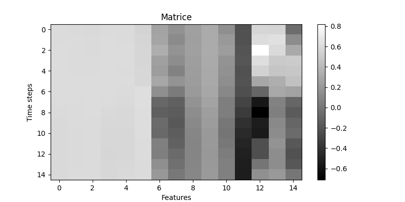
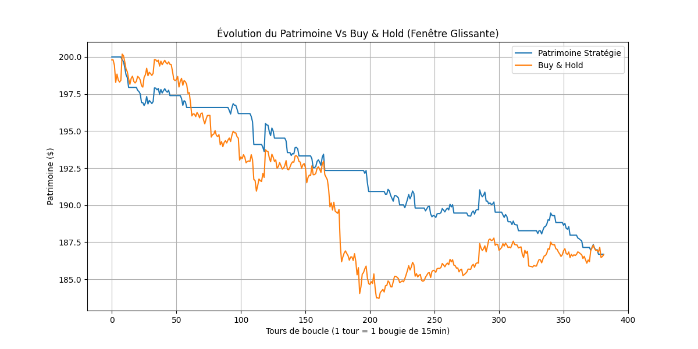
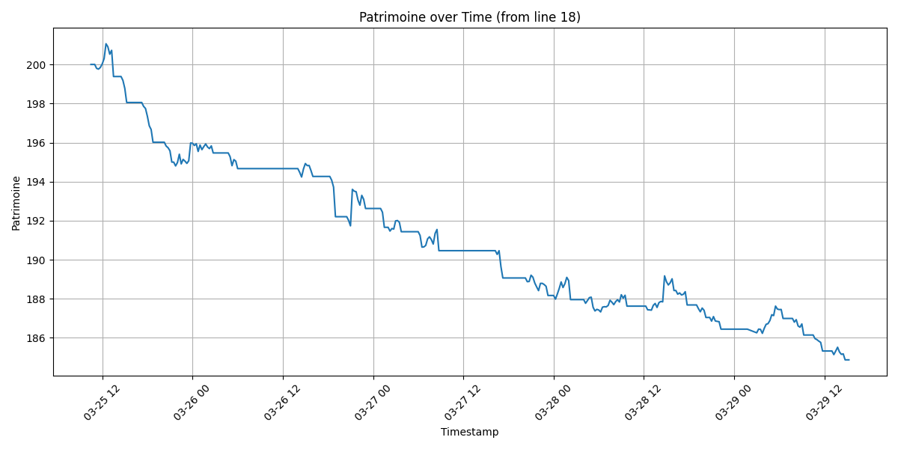

CNN-Based BTCUSDT Trading System
Project Overview
This project implements an end-to-end automated trading system for BTCUSDT on Binance. The core idea is to encode market state as a grayscale image — a 15×15 matrix where rows represent time steps and columns represent normalized technical indicators — and to train a convolutional neural network to classify each image into one of three actions: HOLD, SELL, or BUY.
The system covers the full pipeline: historical data collection and storage in MySQL, feature engineering with 15 technical indicators, image construction, CNN training with class balancing, backtesting against a Buy & Hold benchmark, and live inference on 15-minute candles via the Binance REST API.
Data Pipeline
Historical Data Collection
Historical OHLCV candles are downloaded from the Binance API using the python-binance library and stored in a local MySQL database. The script handles deduplication by querying existing timestamps before insertion, preventing data corruption when re-running.
Three tables are maintained at different temporal resolutions:
btcusdt— 1-minute candlesbtcusdt_15min— 15-minute candles (primary resolution for CNN training)btcusdt_1h— 1-hour candles
The training data spans approximately September 2024 to January 2026, representing over 40,000 15-minute candles. Data access is handled through SQLAlchemy with parameterized date-range queries.
Real-Time Data Acquisition
For live inference, a dedicated module queries the Binance public REST API endpoint /api/v3/klines. It requests the 54 most recent closed 15-minute candles. To ensure only fully closed candles are returned, the request computes an endTime parameter set to one millisecond before the start of the current 15-minute block. This avoids acting on incomplete price information.
Feature Engineering
Technical Indicators
From each raw OHLCV candle, 15 technical indicators are computed. These were selected to capture complementary dimensions of market state: trend direction, momentum, volatility, and volume flow.
| # | Indicator | Category | Window |
|---|---|---|---|
| 1 | RSI | Momentum | 14 |
| 2 | WMA | Trend | 9 |
| 3 | EMA | Trend | 14 |
| 4 | SMA | Trend | 14 |
| 5 | HMA (Hull Moving Average) | Trend | 16 |
| 6 | TEMA (Triple EMA) | Trend | 14 |
| 7 | CCI | Trend | 20 |
| 8 | MACD | Trend | 26/12 |
| 9 | PPO | Momentum | 26/12 |
| 10 | ROC | Momentum | 12 |
| 11 | ADX | Trend | 14 |
| 12 | Parabolic SAR | Trend | — |
| 13 | Williams %R | Momentum | 14 |
| 14 | CMF (Chaikin Money Flow) | Volume | 21 |
| 15 | CMO (Chande Momentum) | Momentum | 14 |
The HMA and TEMA are not available directly in the ta library. They are computed from primitive operations: HMA uses a composition of WMA at different periods (WMA(2·WMA(n/2) - WMA(n), sqrt(n))), and TEMA uses triple recursion of EMA (3·EMA - 3·EMA(EMA) + EMA(EMA(EMA))). Williams %R, CMF, and CMO are also implemented manually to handle edge cases (division by zero replaced with NaN, then dropped).
Labelling Strategy
Labels are assigned using a centered rolling window of size 11 on the close prices. The logic is deterministic:
| Condition | Label | Interpretation |
|---|---|---|
| Close at center = window max | 2 | Local peak |
| Close at center = window min | 1 | Local trough |
| Otherwise | 0 | Neutral |
This approach identifies exact turning points in the price series. The centered window means labels cannot be computed for the most recent 5 candles, which is acceptable since labelling is only used for training, not inference.
Normalization
All 15 indicator columns are scaled to the range [-1, 1] using a MinMaxScaler fitted exclusively on the training set. This scaler is serialized with joblib and reused during validation, backtesting, and live inference to prevent data leakage.
Image Construction
After normalization, the data is sliced into overlapping windows of 15 consecutive rows. Each window produces a matrix of shape (15, 15) — 15 time steps × 15 features — which is treated as a single-channel grayscale image.
Each pixel encodes the normalized value of one indicator at one time step. Spatial coherence is exploited by the CNN: vertically, the network can detect temporal patterns in individual indicators; horizontally, it can detect correlations across indicators at a given moment.

For training, each matrix is paired with the label of its final (15th) row. For live inference, a single matrix is generated from the 15 most recent rows of the 54-candle fetch (the first ~39 candles are consumed by the indicator warm-up periods).
CNN Architecture
The model, PriceCNN, is a compact convolutional network designed for the small 15×15 input size:
Input: [batch, 1, 15, 15]
→ Conv2d(1, 32, kernel=3, padding=1) → ReLU
→ Conv2d(32, 64, kernel=3, padding=1) → ReLU
→ MaxPool2d(2) → 64 × 7 × 7
→ Dropout(0.25)
→ Flatten → 3136
→ Linear(3136, 128) → ReLU
→ Dropout(0.5)
→ Linear(128, 3)
Output: 3 logits (HOLD, SELL, BUY)Design choices:
- Padding=1 on 3×3 convolutions preserves spatial dimensions before pooling, allowing the two convolutional layers to operate at full resolution.
- MaxPool2d(2) reduces the 15×15 feature maps to 7×7 (floor division), producing a 3136-dimensional flattened vector.
- Two dropout layers (0.25 post-convolution, 0.5 pre-classifier) serve as regularization given the relatively small dataset.
- No batch normalization — the MinMaxScaler normalization provides stable input distributions.
Training Procedure
Class Imbalance Handling
The neutral class (label 0) is heavily over-represented in the data since most candles are neither local peaks nor troughs. To counteract this, the CrossEntropyLoss is configured with inverse-frequency class weights:
counts = np.bincount(labels, minlength=3)
weights = counts.sum() / (len(counts) * counts)
weights = weights / weights.mean() # normalize to mean=1
criterion = nn.CrossEntropyLoss(weight=class_weights)This ensures that errors on minority classes (peaks and troughs) are penalized proportionally more during backpropagation.
Optimizer and Scheduling
- AdamW with weight decay of 1e-4 for L2 regularization
- ReduceLROnPlateau scheduler: reduces learning rate by factor 0.5 after 2 epochs without validation loss improvement, with a floor at 1e-5
- Early stopping: training halts after 5-7 epochs without improvement (patience depends on dataset size)
Automatic Hyperparameter Configuration
A configuration function adapts batch size, learning rate, epoch budget, and early stopping patience based on the training set size:
| Train size | Batch size | Learning rate | Max epochs | Patience |
|---|---|---|---|---|
| < 3,000 | 32 | 5e-4 | 45 | 7 |
| 3,000 – 10,000 | 64 | 8e-4 | 35 | 6 |
| > 10,000 | 128 | 1e-3 | 30 | 5 |
On CPU, batch size is capped at 64 to avoid slowdowns from memory pressure.
Data Split
The training set spans September 2024 to January 2026. The validation set covers January 10 to February 10, 2026. This temporal split ensures no future information leaks into training. The best model checkpoint is selected by validation loss, with validation accuracy as a secondary criterion.
Trading Strategy
The implemented strategy is momentum-based. The interpretation of the labels is inverted from what a naive reading might suggest:
- Label 2 (local peak detected) → BUY: the model identifies a strong recent upward move, interpreted as momentum that will continue.
- Label 1 (local trough detected) → SELL: the model identifies a strong recent downward move, interpreted as bearish momentum.
- Label 0 (neutral) → HOLD: no action taken.
The system maintains a binary state: it is either fully in USD or fully in BTC. A BUY signal when already holding BTC is ignored, and vice versa. Transaction fees of 0.1% are applied on every trade.
Live Pipeline
The production loop executes every 15 minutes with the following steps:
- Wait until the clock reaches a multiple of 15 minutes
- Fetch 54 closed candles from the Binance public API
- Compare with the last processed set to avoid duplicate signals
- Compute indicators, normalize, and extract the final 15×15 matrix
- Run inference through the loaded CNN model
- If BUY or SELL: place a market order via the Binance authenticated API
Two trading modules exist: a testnet version for paper trading (place_order_demo.py) and a production version (place_order.py) that includes exchange filter validation (lot size, step size, minimum notional), quantity normalization, and structured error handling. API keys are loaded from environment variables via python-dotenv.
Backtesting
Sliding Window Backtest
The most realistic backtest (financial_analysis2.py) replicates the live pipeline exactly: for each iteration, it takes a fresh window of 54 candles, generates a single image, runs the prediction, and executes at the open price of the next candle. This avoids look-ahead bias that would occur with pre-computing all images from a single normalized dataset.

The backtest benchmark is a simple Buy & Hold: the entire capital is converted to BTC at the first candle's close price, and its value is tracked over time. Both strategies include 0.1% fees.
Real-Time Simulation Results
The system was deployed in a real-time simulation (no actual orders, but using live Binance data) from March 24 to March 29, 2026. Decisions and portfolio values were logged every 15 minutes to a CSV file.

Key observations from the real-time data:
- Over 400 decisions were logged across 5 days
- The vast majority of predictions are HOLD (consistent with the label distribution)
- Approximately 30 round-trip trades were executed
- The portfolio declined from $200 to ~$185, a loss of approximately 7.5%
- Most trades are small losers: the momentum interpretation does not capture sufficient directional edge after fees
Limitations and Analysis
- Labelling granularity: the rolling window approach identifies exact turning points, but price series are noisy at 15-minute resolution. The model must distinguish local peaks from random fluctuations — a task where even small prediction errors compound through fees.
- Momentum interpretation: using a peak detection label as a momentum-continuation signal is a hypothesis. In practice, a detected peak often marks the end of a move rather than its midpoint, leading to systematic late entries.
- Class imbalance: despite weighting, label 0 dominates, and the model tends toward conservative HOLD predictions. This reduces the number of trades but also limits the strategy's ability to capture any directional edge.
- No position sizing or risk management: the system is all-in or all-out, with no stop-loss, no partial positions, and no volatility-adjusted sizing.
- Single asset and timeframe: the system is optimized for one pair at one resolution, making it vulnerable to regime changes specific to BTCUSDT 15-minute dynamics.
- Normalization drift: the MinMaxScaler is fitted on historical data. If the indicator distributions shift (e.g., during a volatility spike), pixel values may saturate at the [-1, 1] boundaries, degrading image quality.
Potential Improvements
- Alternative labelling: replace peak/trough detection with forward-return thresholds (e.g., classify based on whether the next N candles' return exceeds transaction costs), making the signal directly actionable.
- Multi-channel images: add OHLCV channels alongside indicator channels to give the CNN access to raw price structure.
- Deeper architectures: experiment with residual connections or attention mechanisms to capture longer-range temporal dependencies within the 15-step window.
- Online retraining: periodically refit the model and scaler on recent data to adapt to changing market regimes.
- Risk management layer: add position sizing based on prediction confidence (softmax entropy), stop-losses, and maximum drawdown constraints.
- Walk-forward optimization: implement a rolling train/validate/test framework to measure true out-of-sample performance across multiple market regimes.
Technical Stack
- Deep Learning: PyTorch (model definition, training loop, inference)
- Data: pandas, NumPy, SQLAlchemy, MySQL
- Feature Engineering: ta (Technical Analysis library), custom implementations for HMA, TEMA, Williams %R, CMF, CMO
- Preprocessing: scikit-learn (MinMaxScaler), joblib (serialization)
- API Integration: python-binance (historical data), requests (real-time REST API, order execution)
- Security: python-dotenv for credential management, HMAC-SHA256 request signing
References
The image-based approach to financial time series classification is inspired by:
- Sezer, O. B., & Ozbayoglu, A. M. — Algorithmic Financial Trading with Deep Convolutional Neural Networks: Time Series to Image Conversion Approach (Preprint). This paper proposes converting technical indicators into 2D images for CNN classification. The present implementation adapts this idea with a different indicator set, labelling logic, and trading strategy.